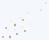

Review draft. Verify all fabrication layers and original fabrication requirements before use.
One distinct translation satisfies the evidence thresholds. Inspect the overlay and unmatched holes.
Translation: [-5.0, -7.0] mm. Matched: 7. Unmatched holes need review.

Load the corrected COPY alongside every original fabrication layer. Verify NPTH, tooling holes, board outline, slots and manufacturing requirements. The report does not certify manufacturing readiness.
Contact PANDAO